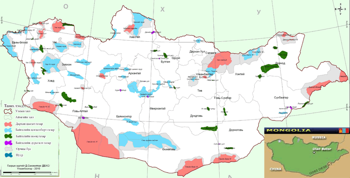

Protected Areas
Beginning in 1778 with one of the world's oldest nature preserves (Bogdkhan Mountain), Mongolia's protected area system has expanded to include twenty-six areas that preserve important examples of the nation's rich ecological and cultural heritage. From small reserves surrounding monastery ruins and sacred mountains to the massive Great Gobi Strictly Protected Area, the fourth largest biosphere reserve in the world, the protected areas are as varied as Mongolia's landscapes. Together, the protected areas encompass approximately 12.3 million hectares, roughly 12% of Mongolia's territory. Today, under the direction of the National Service for Protected Areas and Ecotourism (NSPAE), the park system is still evolving. Although many ecologically significant areas were protected in the past few years, many more important natural areas have not yet been included in the system.

The Ministry of Nature, Environment and Tourism (MNET) and it is Protected Areas Bureau control the national park system.
The MNET classifies protected areas into four categories. In order of importance, they are:
Strictly Protected Areas Very fragile areas of great importance; hunting, logging and development is strictly prohibited and there is no established human influence.
National Parks Places of historical and educational interests; fishing and grazing by nomadic people is allowed and parts of the park are developed for ecotourism.
Natural and Historical Monuments Important places of historical and cultural interests; development is allowed within guidlines.
Natural Reserves Less important regions protecting rare species of flora and fauna, and archeological sites; some development is allowed within certian guidlines.
The 62 protected areas in Mongolia now constitute an impressive 15% of the country. The strictly protected areas of Bogd Khaan Uul, Great Gobi Desert and Uvs Nuur Basin are biosphere reserves included in UNESCO’s Man and Biosphere Project.